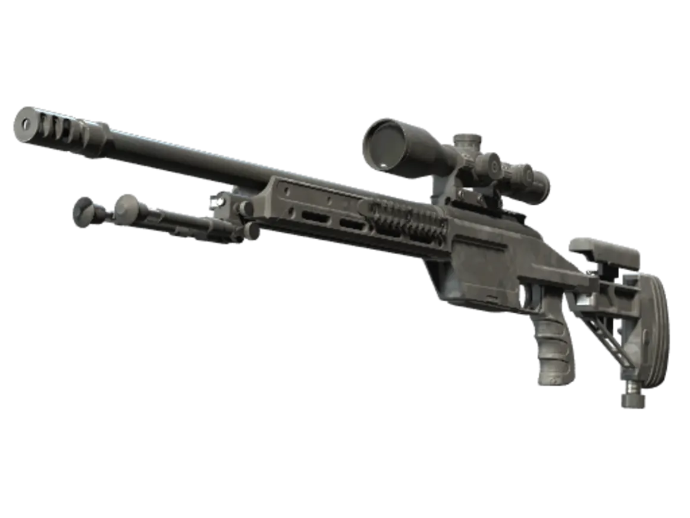

SSG 08
Alright, settle in. This is a cold shot etched deep into CNCS history. The arena fell silent, only the clicks of mice and the sound of breathing hanging in the air. TyLoo was trapped in a brutal eco round. The team had nothing but half armor, barely equipped, almost fighting with their bare hands. They were up against Vitality, the undisputed world’s best team at the peak of their power. Instead of falling back to play safe, DANK1NG picked up the SSG 08 — the scout, light in weight, whose firepower had long been underestimated by countless players. Standing across from him was ZywOo, the so-called monster. At that time, he reigned atop CS, with near-unmatched reaction, aim and presence, the nightmare of every sniper. He pushed forward to hold control, calm and composed, as if everything was going exactly his way. No one expected that this step would walk straight into a deadly aim from the East. DANK1NG crept forward, eyes locked on target. No fancy movement, no flashy peeks. Just a split second of held breath, a steady aim. A single gunshot rang out, before the dust could even settle.

| Category | Sniper Rifle |
|---|---|
| Users | Terrorists, Counter-Terrorists |
| Price | $1,700 |
| Kill Reward | $300 |
| Damage | 88 |
| Penetration | 250% |
| Fire Mode | Semi-Automatic, Bolt-Action |
| Magazine | 10 / 20 |
| Fire Rate | 48.0 RPM |